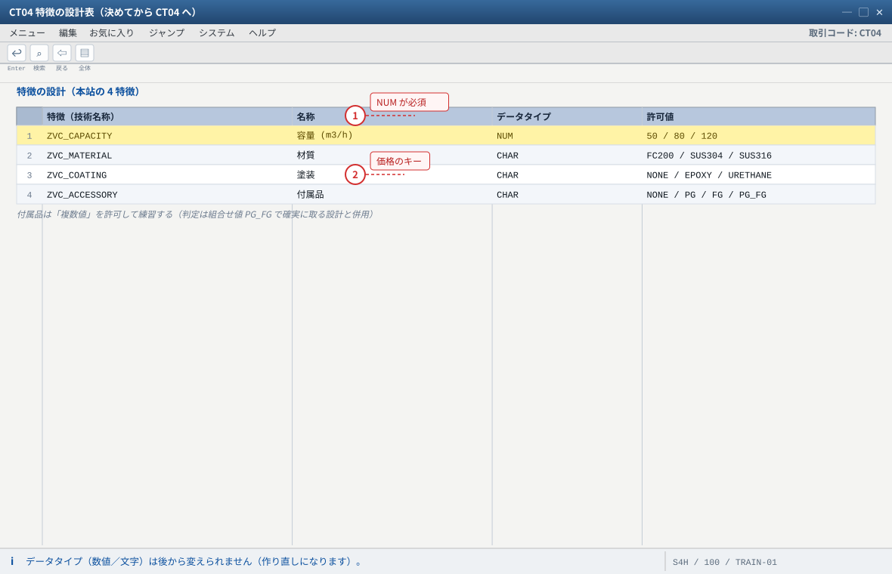
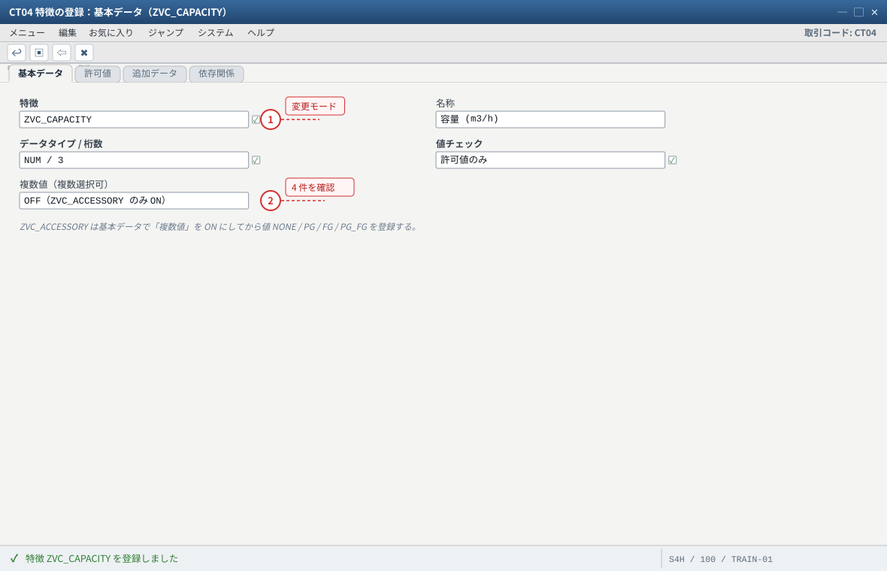
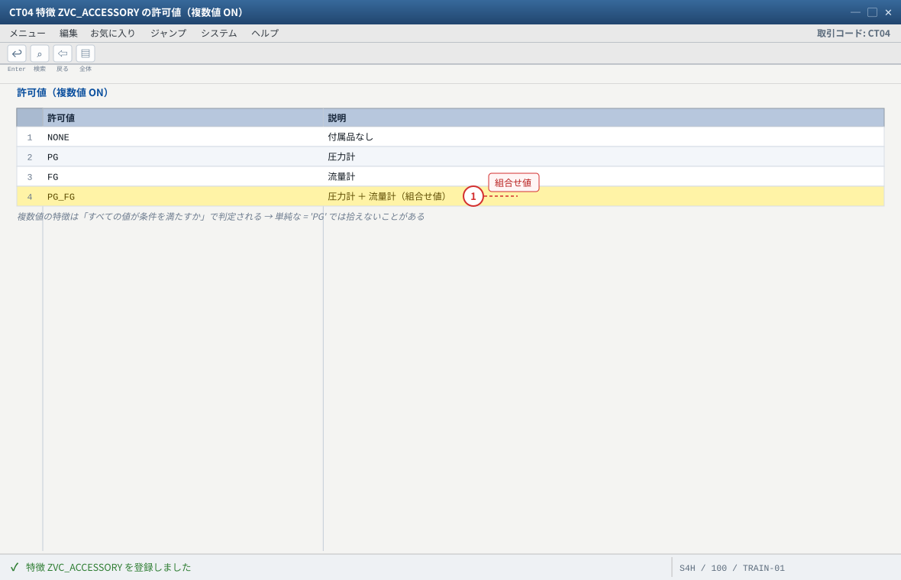
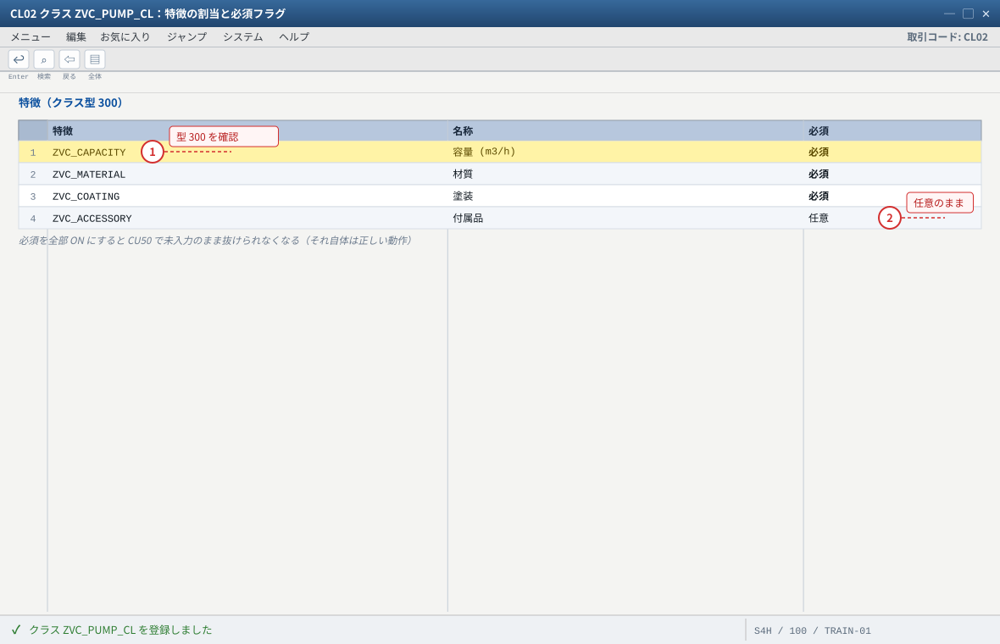

练习① 特徴とクラスの設計（CT04 × 4 → CL02）
关于本页的「画面イメージ」：这些图是按 SAP GUI 标准布局重绘的示意图，不是实机截图。字段名、字段顺序、按钮位置会因版本与自定义而不同，请以自系统的画面为准（各 STEP 的「自系统での確認方法」里写了确认用的 T-code 与表）。若是想换成实机截图，把同名
.png 放进 assets/gui/ 后执行 python3 tools/swap_gui_images.py <site> --apply 即可一键替换。本练习完成什么
VC 的第一层地基：「質問と選択肢」（特徴）と「質問票」（クラス）を作ります。
①
CT04 で特徴 4 つ（ZVC_CAPACITY / ZVC_MATERIAL / ZVC_COATING / ZVC_ACCESSORY）を許可値つきで登録、
② CL02 でクラス型 300 のクラス ZVC_PUMP_CL を作り 4 特徴を割当、③ CT04/CL03 で証跡を残す、までです。
预计 40 分钟。本练习之后系统里的状态是：特徴 4 つとクラス 1 つが存在し、まだ品目には何も割り当たっていない（それは练习②）。1 CT04
容量（数値）
容量（数値）
→
2 CT04
材質・塗装
材質・塗装
→
3 CT04
付属品（複数値）
付属品（複数値）
→
4 CL02
型 300 のクラス
型 300 のクラス
→
5 特徴の割当
必須の設計
必須の設計
→
✓ 验收
1-1 特徴の設計（何を特徴にするかを先に決める）
手を動かす前に 5 分で決めてください。特徴は後から作り直せますが、データタイプ（数値／文字）は後から変えられません（作り直しになります）。
| 特徴（技術名称） | 名称 | データタイプ | 値 | なぜこの設計か |
|---|---|---|---|---|
ZVC_CAPACITY | 容量 (m3/h) | NUM | 50 / 80 / 120 | 数値にすると大小比較（>=）の依存関係が書ける。「120 以上でのみ選べる」ような条件に必須 |
ZVC_MATERIAL | 材質 | CHAR | FC200 / SUS304 / SUS316 | 価格差が最も出る特徴。変種価格のキーに使う（C13） |
ZVC_COATING | 塗装 | CHAR | NONE / EPOXY / URETHANE | 工程（塗装工程）の取捨に使う（C9）。前提条件の練習にも使う（C5） |
ZVC_ACCESSORY | 付属品 | CHAR | NONE / PG / FG / PG_FG | 複数値（複数選択可）を許可して練習する。BOM 明細の選択条件の題材になる（C6） |
設計判断：付属品を「複数値」にするか「組合せ値」にするか
① 複数値（複数選択可）＝「圧力計と流量計の両方」を素直に表現できる。ただし前提条件・選択条件の判定が「すべての値が条件を満たすか」になるため、
単純な
② 組合せ値（
本站は両方を使う：複数値の挙動を体感した上で、判定は組合せ値で確実に取る——「複数値の特徴は判定が難しい」という現場の実感を持って帰るのがゴールです。
= 'PG' では拾えないことがある。② 組合せ値（
NONE/PG/FG/PG_FG）＝判定は単純（= 'PG_FG'）になるが、付属品が 5 種類になると組合せが爆発する。本站は両方を使う：複数値の挙動を体感した上で、判定は組合せ値で確実に取る——「複数値の特徴は判定が難しい」という現場の実感を持って帰るのがゴールです。

- 1 容量を CHAR にすると大小比較（>= 120）が書けなくなる
- 2 材質は価格差が最も出る特徴 → 変種価格のキーに使う（C13）
自システムでの確認：CT04（照会）で 4 特徴の名称・データタイプ・許可値を一覧にする。SE16N は CABN（技術名称 ATNAM という記載）→ 項目名は SE11 で確認。
1-2 特徴の登録（CT04）
入力值：1-1 の表のとおり（名称・データタイプ・許可値）。
CT04→ 初期画面で「変更」を押す（照会モードのままだと登録できません）→ 特徴名ZVC_CAPACITY→ 「登録」。- 基本データタブ：名称「容量 (m3/h)」、データタイプ数値（
NUM）、桁数（例 3）・小数点（0 または 1）、値チェック＝許可値（「許可値のみ」を選ぶ）。 - 許可値タブ：
50/80/120を入力（説明欄に「小型/標準/大型」と入れておくと設定画面が読みやすくなる）。 - 同様に
ZVC_MATERIAL（CHAR、FC200/SUS304/SUS316）、ZVC_COATING（CHAR、NONE/EPOXY/URETHANE）を登録。 ZVC_ACCESSORY：基本データで「複数値」を ON（複数選択可）にしてから、値NONE/PG/FG/PG_FGを登録。- 4 つ登録したら「戻る」で一覧に戻り、4 件が並ぶことを確認。ここで一度保存状態と依頼（カスタマイジング依頼）を確認する（依頼を求められたら练习用依頼を指定）。
確認（期待结果）
①
CT04 照会モードで ZVC_MATERIAL を開く → データタイプ CHAR・許可値 3 件・複数値 OFF。
② ZVC_ACCESSORY → 複数値 ON になっている。この 1 項目が後（C6）の選択条件の難易度を決めます。
③ SE16N → CABN：特徴の技術名称の項目（ATNAM という記載が一般的）で ZVC_* を絞り 4 件見える。値は CAWN／テキストは CAWNT という記載（項目名は SE11 で確認）。つまずき
① 照会モードのまま登録しようとして「変更できません」→ 初期画面で「変更」。
② データタイプを
CHAR にしてしまう（容量）→ 後で >= が使えず、容量の条件が書けない。ここだけは最初に正しく。
③ NUM にしたのに値に「120m3/h」のような単位を入れる → 数値型は値だけ。単位は名称か、別途単位設定で表現する。
④ 値の前後に空白・全角スペース（見えない）→ 依存関係の = が一致せず「反応しない」原因になる。コピペせず手入力する。練習課題特徴の「値チェック」を「許可値のみ」以外（自由入力）にすると、VC で何が困るか？ 3 つ挙げよ（ヒント：依存関係の網羅性、条件レコードのキー、入力ミス）。

- 1 照会モードのまま登録しようとすると「変更できません」。初期画面で「変更」を押す
- 2 4 特徴を登録したら一覧に戻り、4 件並ぶことを確認する
自システムでの確認：CT04 の照会モードで ZVC_MATERIAL を開き、データタイプ CHAR・許可値 3 件・複数値 OFF を確認。

- 1 組合せ値 PG_FG を用意しておくと選択条件の判定が確実になる
自システムでの確認：CT04 照会で ZVC_ACCESSORY の「複数値」が ON、許可値 4 件。この 1 項目が C6 の選択条件の難易度を決める。
1-3 クラスの登録と特徴の割当（CL02）
入力值：クラス型 300 / クラス ZVC_PUMP_CL / 名称「ポンプ バリアントクラス」/ 特徴 4 つ（必須：容量・材質・塗装の 3 つ、付属品は任意）。
CL02→ クラス型300を選択（F4 で「品目変種」系の型を確認できる）。他の型（001等）を選ばないこと。- クラス
ZVC_PUMP_CL→ 「登録」→ 名称「ポンプ バリアントクラス」。 - 「特徴」タブ → 行追加 →
ZVC_CAPACITYを入力（特徴名が自動表示され、名称・データタイプが読み込まれる）。 - 同じ行の「必須（必須特徴）」列を ON。続けて
ZVC_MATERIAL（必須 ON）・ZVC_COATING（必須 ON）・ZVC_ACCESSORY（必須 OFF）。 - 保存 → 依頼を指定 →
CL03でクラスZVC_PUMP_CLを照会し、4 特徴と必須状態を確認。
確認（期待结果）
①
CL03 → クラス ZVC_PUMP_CL：特徴タブに 4 行、必須列が「容量・材質・塗装＝ON／付属品＝OFF」。
② SE16N → KLAH：CLASS = ZVC_PUMP_CL・クラス型の項目（KLART）＝ 300 という記載。クラスに割当てた特徴は KSML という記載（CLINT の内部番号で絞る）。
③ CT04 → ZVC_MATERIAL → どこで使われているか（使用箇所）を見ると ZVC_PUMP_CL が出る（環境により表示場所が違う：CL03 と SE16N KSML の両方で確認すると確実）。つまずき
① クラス型を間違える（最も多い）→ 品目の分類ビューでクラスが出ない／受注で構成画面が出ない。症状が出たら最初にクラス型を見る。
② 特徴の「必須」を全部 ON にして
CU50 で抜けられなくなる → 正しい動作です（完全性チェック）。ただし「任意項目を必須にしてしまう」設計ミスは現場で嫌われる。何を必須にするかは業務と合意する。
③ 既に受注が流れているクラスへ特徴を追加 → 既存受注の再構成が必要になる（変更統制 → 练习⑤）。
④ クラス名を「ZVC_PUMP_CL」ではなく「PUMP_CL」など Z 無しで作ると、後続の手顺（品目への割当）で見つけにくくなる。命名は全手順で統一。練習課題クラス
ZVC_PUMP_CL の ZVC_ACCESSORY を必須（ON）に変更して保存し、练习② の前に CU50 を触ってみてください（品目が未作成なので、CU50 は品目なしでは動かないことも確認できます）。必ず元（OFF）に戻すこと——戻せることが「変更統制の基本動作」です。
- 1 クラス型を間違えると品目の分類ビューにクラスが出ない（症状が出たら最初に見る）
- 2 付属品は任意。練習課題で必須に変えて元に戻せることを確認する
自システムでの確認：CL03 の特徴タブ、SE16N KLAH（CLASS / KLART = 300 という記載）と KSML（割当てた特徴という記載）→ 項目名は SE11 で確認。
1-4 本练习的期待结果汇总
| # | 成果物 | 期待值 | 証跡（画面/T-code） |
|---|---|---|---|
| 1 | 特徴 4 つ | ZVC_CAPACITY(NUM) / ZVC_MATERIAL(CHAR) / ZVC_COATING(CHAR) / ZVC_ACCESSORY(CHAR・複数値 ON) | CT04 照会／SE16N CABN |
| 2 | 許可値 | 3 / 3 / 3 / 4 件 | CT04 の許可値タブ |
| 3 | クラス | ZVC_PUMP_CL・クラス型 300 | CL03／KLAH（KLART = 300） |
| 4 | 特徴の割当 | 4 行（必須：3 つ ON／付属品 OFF） | CL03 の特徴タブ／KSML |
1-5 つまずきと対処（まとめ）
| 症状 | 原因の第一嫌疑 | 确认手顺 |
|---|---|---|
| 特徴が登録できない | CT04 が照会モード／権限不足 | 初期画面で「変更」を押す。それでも不可なら権限（C0 の 5 T-code 確認に戻る） |
| 値が 2 つしか出ない／登録した値が出ない | 保存していない／別の特徴に値を入れた | CT04 で該当特徴の許可値タブを再確認。保存は値の入力ごとに行うのが安全 |
| 数値の比較が使えない | データタイプが CHAR | CT04 基本データのデータタイプ。後から変えられないので作り直し |
| 品目（或いは受注）でクラスが出てこない | クラス型が 300 でない | CL03 のクラス型 → 正しければ品目側の分類ビュー（练习②） |
CU50 で品目が選べない | 品目が未作成（练习②の領域） | 本练习の範囲外。「特徴・クラスだけでは設定できない」ことを理解するのが正解 |
1-6 验收（完成基准）
- 特徴 4 つが正しいデータタイプ（容量＝数値／他＝文字）で登録されている
- 容量の許可値が
50/80/120、材質・塗装が各 3 値、付属品が 4 値になっている ZVC_ACCESSORYの「複数値」が ON になっている- クラス
ZVC_PUMP_CLがクラス型300で作られている - クラスに 4 特徴が割当たり、必須が「容量・材質・塗装＝ON／付属品＝OFF」になっている
CL03とCT04の画面（またはKLAH/CABNのSE16N）を自分の目で見て証跡として提示できる- 「データタイプは後から変えられない」「必須フラグはクラス側で持つ」の 2 点を自分の言葉で説明できる
下一步 → 练习② 設定可能品目と設定プロファイル（品目
ZVC-PUMP01 を作り、ここで作ったクラスを割り当てます）